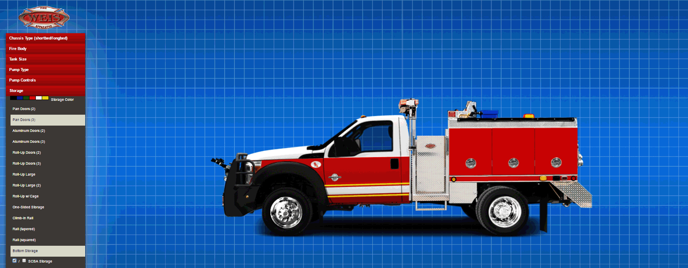

Creating an Interactive Solution
The fire apparatus division of Weis Fire & Safety needed a faster way for clients to communicate their needs for a wildland fire truck. The company custom-builds every apparatus, with every department having their own configuration of firefighting equipment according to their needs. With a nearly endless amount of options and possible layouts, verbally communicating every detail of the apparatus becomes an ardous and improvised process.
My solution to this communication issue was to provide the customer with a means of gathering and sending their specifications for a fire truck as the starting point of contact. Once their design is in, it serves as an immediate estimate to the scope of the job in which finer details can be discussed.
 The user begins by selecting one of the available chassis styles.
The user begins by selecting one of the available chassis styles.
Users are invited to explore a variety of options for every aspect of the apparatus. One of the key features of the configurator is its flexibility to adjust the layout of all the equipment based on user input. For example, if the user has completed their equipment choices but then decides to adjust the length of the fire truck, the equipment will shift position and size according to the new change. The result is a streamlined experience that promotes experimentation and enables creativity.
 Changes in chassis and fire body affect the size and position of equipment.Production Process
The development from concept to finished product required a wide scope of skills. Every equipment option on the configurator required photography and editing. The images were cut out and placed to fit within the framework of the digital images. Once the vast library of options was cleanly edited and categorized, the process of coding began.
Coding Structure
At the heart of the configurator are Javascript functions that trigger the display of HTML objects and their styles. Great care had to be taken to ensure compatibility of the functions across all browsers, including older versions of IE. My approach to loading all the content initially ensures minimal delay when selecting options and was especially useful when an option required the display of multiple images simultaneously. The layout is based on fluid images and a menu that adapt to the width of the window, allowing any device to render the entire configurator in its display.
Reception
Build-A-Truck was launched along with the redesigned website for Weis Fire & Safety, and garnered attention from fire departments and manufacturers as the only visual configurator for wildland fire apparatus. The process of quoting a fire truck improved overnight. As fire departments across the country began sending their own designs for pricing, the company was able to follow up on every request much faster and in a structured manner.
The configurator has also attracted many users to visit the company's website, with over 50% of traffic belonging to the Build-A-Truck page. Fire department staff have benefitted from the configurator as collaborative tool for drafting an apparatus to meet budgets and requirements.
Conclusion
Creating Build-A-Truck was a big accomplishment for me as a graphic and web designer. One of the biggest rewards of completing this project was seeing it in use by people from all places. There is a great sense of satisfaction when a fire department signs an apparatus contract and the Fire Chief says they found the company because of Build-A-Truck.